Visualisation of articles extracted from BHL titles. For each BHL title the thumbnail represents article coverage in each item. Click on the thumbnail to explore coverage in each scanned volume.
| The Australian zoologist. | |
| Austrobaileya. | |
| Avicennia | |
|
|
The Beagle |
| The Gardens' bulletin, Singapore. |
| The Gardens' bulletin; Straits Settlements. | |
|
|
Journal of the Royal Society of Western Australia |
| Memoirs of the Queensland Museum | |
|
|
Nuytsia: journal of the Western Australian Herbarium |
| Northern Territory Naturalist | |
| The Pan-Pacific entomologist. |
|
|
Proceedings of the Royal Society of Queensland |
| Records of the South Australian Museum | |
|
|
Records of the Queen Victoria Museum Launceston |
|
|
Records of The Western Australian Museum |
| Revue suisse de zoologie. | |
| Revue zoologique africaine. | |
| Ruwenzori Expedition 1934-1935. |
| Spixiana. |
| Spixiana. |
| Stuttgarter Beiträge zur Naturkunde. |
| Stuttgarter Beiträge zur Naturkunde. | |
| Stuttgarter Beiträge zur Naturkunde. |
| Telopea : Journal of plant systematics. | |
| The Sarawak Museum journal. |
| Transactions of The Royal Society of South Australia | |
| Transactions and proceedings and report of the Royal Society of South Australia (Incorporated) | |
|
|
Transactions and proceedings of the Royal Society of South Australia (Incorporated) |
|
|
Transactions of the Royal Society of South Australia, Incorporated |
| Tulane studies in zoology and botany. |
| Tulane studies in zoology. | |
| The Victorian Naturalist | |
| Amphipacifica : journal of systematic biology. | |
| Annals of the South African Museum. Annale van die Suid-Afrikaanse Museum. | |
| Annals of the South African Museum. Annale van die Suid-Afrikaanse Museum. | |
| Annals of the Transvaal Museum. | |
| Annals of tropical medicine and parasitology. | |
| Archivos do Museu Nacional do Rio de Janeiro. | |
| Biologia Centrali-Americana :zoology, botany and archaeology /edited by Frederick Ducane Godman and Osbert Salvin. | |
| Boletim do Museu Goeldi (Museu Paraense) de Historia Natural e Ethnographia. | |
| Boletim do Museu Paraense Emílio Goeldi | |
| Boletín del Museo Nacional de Chile. | |
| Bollettino dei musei di zoologia ed anatomia comparata della R. Università di Torino. | |
| Bollettino dei Musei di zoologia ed anatomia comparata della R. Università di Torino. |
| Bollettino del Laboratorio di zoologia generale e agraria della R. Scuola superiore d'agricoltura in Portici. | |
| Bollettino della Società adriatica di scienze naturali in Trieste. |
| Bollettino della Società dei naturalisti in Napoli. | |
| Bollettino della Società zoologica italiana. | |
| Bollettino malacologico. | |
| 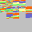 | Bonn zoological bulletin. |
| Bonner zoologische Beiträge : Herausgeber: Zoologisches Forschungsinstitut und Museum Alexander Koenig, Bonn. | |
| Bonner zoologische Monographien. | |
| Bonner zoologische Monographien. | |
| Botanical Museum leaflets, Harvard University. | |
| Bulletin of the British Museum (Natural History). |
| 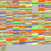 | Bulletin of the British Museum (Natural History). |
| Bulletin of the British Museum (Natural History). | |
| Bulletin of the British Museum (Natural History). | |
| Bulletin of the British Museum (Natural History). | |
| Bulletin of the British Museum (Natural History). | |
| Bulletin of the British Museum (Natural History). | |
| Bulletin of the British Ornithologists' Club. | |
| Bulletin of the British Ornithologists' Club. | |
| 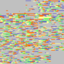 | Bulletin of the Brooklyn Entomological Society. |
| Bulletin of the Brooklyn Entomological Society. | |
| Bulletin of the Natural History Museum. | |
| Bulletin of the Natural History Museum. | |
| Bulletin of the Natural History Museum. | |
| Bulletin of the Southern California Academy of Sciences | |
| Bulletin of the Southern California Academy of Sciences. | |
| Contributions from the United States National Herbarium | |
| Contributions from the University of Michigan Herbarium. | |
| Contributions in science | |
| Entomologische Arbeiten aus dem Museum G. Frey Tutzing bei München. | |
| Entomologische berichten. | |
| Entomologische Blätter : internationale Monatsschrift für die Biologie der Käfer Europas unter besonderer Berücksichtigung der Forstentomologie. | |
| Entomologische Mitteilungen. | |
| Entomologische Monatsblätter. | |
| Entomologische Nachrichten. | |
| 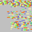 | Entomologische Rundschau. |
| Entomologische Zeitschrift. | |
| Entomologische Zeitung. | |
| Fieldiana. | |
| Gayana. | |
| Gayana. | |
| 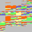 | Gayana. |
| Iberus : revista de la Sociedad Española de Malacología. | |
| Ibis. | |
| Iheringia. | |
| Insects of Samoa and other Samoan terrestrial arthropoda | |
| Insecutor inscitiae menstruus. | |
| Insekten-Börse. | |
| Journal and proceedings of the Asiatic Society of Bengal. | |
| Journal of Hymenoptera research. | |
| Journal of South African botany. | |
| Journal of the Arnold Arboretum. | |
| Journal of the Lepidopterists' Society. | |
| Journal of the New York Entomological Society. | |
| Journal of the New York Entomological Society. | |
| Journal of the Straits Branch of the Royal Asiatic Society. | |
| Journal of the Washington Academy of Sciences. | |
| Liangqi baxing dongwu yanjiu = Acta harpetologica Sinica | |
| Liangqi baxing dongwu yanjiu = Acta herpetologica Sinica. | |
| Malacologia. | |
| Memoirs of Museum of Victoria. |
| Memoirs of Museum Victoria | |
| Memoirs of the National Museum of Victoria. | |
| Memoirs of the National Museum, Melbourne | |
| Memórias do Instituto Butantan | |
| Memórias do Instituto Butantan | |
| Memórias do Instituto Oswaldo Cruz. | |
| 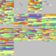 | Notulae systematicae. |
| 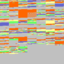 | Novitates Zoologicae. |
| Pacific science. | |
| Papéis avulsos do Departamento de Zoologia | |
| Papers and proceedings of the Royal Society of Tasmania. | |
| Phytologia. | |
| Phytoneuron | |
| Postilla. | |
| Proceedings of the Entomological Society of Washington. | |
| Proceedings of the Hawaiian Entomological Society. | |
| Proceedings of the United States National Museum. | |
| Proceedings of the Washington Academy of Sciences. |
| Publication. Field Columbian Museum. | |
| Publication. Field Museum of Natural History. | |
| Quaestiones entomologicae. | |
| Revista chilena de entomología / Universidad de Chile, Sociedad Chilena de Entomología. | |
| Revista chilena de historia natural. | |
| Revista de la Academia Canaria de Ciencias. | |
| Revista del Museo de La Plata. | |
| Revista do Museu Paulista | |
| Revista do Museu Paulista. | |
| Richardiana. | |
| Smithsonian miscellaneous collections. | |
| The Journal of the Bombay Natural History Society. | |
| Kirtlandia | |
| Proceedings of the Entomological Society of Washington | |
| Quaestiones entomologicae | |
| Zoologica |
| American Journal of Botany |
| American Journal of Science | |
| American Naturalist | |
| Annals of Botany | |
| Annals - Entomological Society of America. | |
| Insect Life | |
| Journal of Parasitology | |
| Bulletin of the Brooklyn Entomological Society | |
| Contributions from the Arnold Arboretum of Harvard University | |
| The Entomological magazine | |
| Journal of the Arnold Arboretum | |
| Journal of the Arnold Arboretum. Supplementary series | |
| The Nautilus |
| Papilio | |
| Sargentia | |
| Western Australian Naturalist | |
| 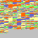 | Muelleria |
| Atti della Società Italiana di Scienze Naturali e del Museo Civico | |
| Atti della Società italiana di scienze naturali e del Museo civico | |
| Atti della Società italiana di scienze naturali | |
| SIDA | |
| Veliger | |
| Journal of economic entomology | |
| Zeitschrift für Botanik |
| Entomological news | |
| Proceedings of the Entomological Society of Philadelphia | |
| Bartonia | |
| Fernwort papers |
| Transactions of the Academy of Science of St. Louis | |
| Proceedings of the California Academy of Natural Sciences | |
| Proceedings of the California Academy of Sciences (1868) | |
| Proceedings of the California Academy of Sciences. 3rd ser., Botany. |
| Proceedings of the California Academy of Sciences. 3d ser. Geology. | |
| Proceedings of the California Academy of Sciences. 3d ser. Mathematics-physics. |
| Proceedings of the California Academy of Sciences. 3d ser. Zoology. | |
| Proceedings of the California Academy of Sciences, 4th series. | |
| MNHN | Muséum National d'Histoire Naturelle |
| Adansonia | |
| Adansonia | |
| Adansonia; recueil d'observations botaniques /redige par le Dr. H. Baillon. | |
| Cryptogamie. Bryologie, lichenologie | |
| 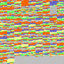 | Cryptogamie. Mycologie |
| Revue algologique |
| Revue bryologique | |
| Revue bryologique et lichenologique | |
| Revue de mycologie | |
| 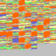 | Bulletin du Muséum national d'histoire naturelle. Section A: Zoologie, biologie et écologie animales |
| BMBOT - Bulletin du Muséum National d'Histoire Naturelle Sér. 3, Botanique 1972-1978 #5 | |
| BMBAD - Bulletin du Muséum National d’Histoire Naturelle Section B,Adansonia, botanique, phytochimie 1981-1996 | |
| Cryptogamie. Mycologie | |
| Mémoires du Muséum d'histoire naturelle. | |
| Mémoires du Muséum national d'histoire naturelle | |
| Mémoires du Muséum national d'histoire naturelle | |
| Mémoires du Muséum national d'histoire naturelle. | |
| Mémoires du Muséum national d'histoire naturelle. Série B, Botanique | |
| Bulletin du Muséum national d'Histoire naturelle 3ème série - Zoologie | |
| Bulletin du Muséum national d'histoire naturelle. Section A: Zoologie, biologie et écologie animales | |
| Bulletin du Muséum national d'histoire naturelle. Section B, Botanique,biologie et écologie végétales, phytochimie | |
| Bulletin du Muséum national d'histoire naturelle. Section B, Botanique | |
| Bulletin du Muséum National d'Histoire Naturelle Section B,Adansonia, botanique, phytochimie | |
| Bulletin du Museum national d’histoire naturelle Sciences de la terre | |
| 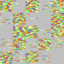 | Bulletin du Muséum d'histoire naturelle |
| 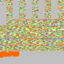 | Bulletin du Muséum national d'histoire naturelle |
| Records of the Auckland Institute and Museum | |
| Journal of research on the lepidoptera |